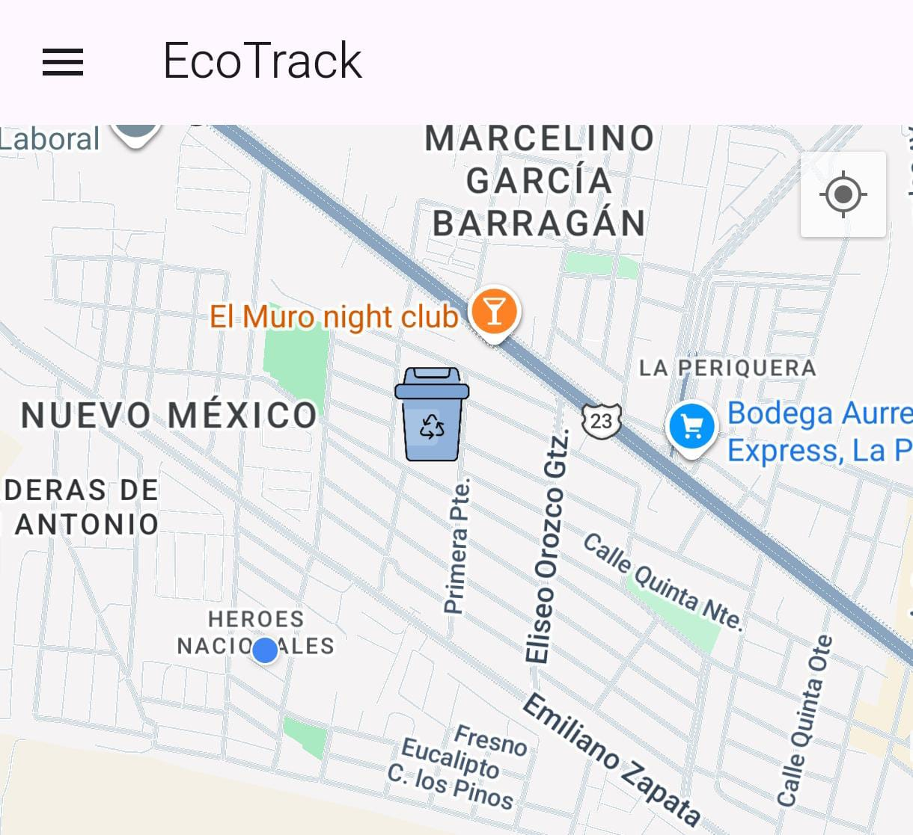

Ingeniería en Sistemas
Tecnológico Superior de Jalisco (campus Zapopan) · 2023 – 2027

Estudiante de Ingeniería en Sistemas en el Tecnológico Superior de Jalisco, enfocado en el análisis de datos. Manejo SQL y Python para consultar, limpiar y analizar información, y actualmente fortalezco mis habilidades en pandas y Power BI para convertir datos en decisiones. Mi formación en desarrollo me da una base sólida en programación, bases de datos y control de versiones con Git.
Tecnológico Superior de Jalisco (campus Zapopan) · 2023 – 2027
Análisis de datos de peleas de UFC con Python y pandas para explorar estadísticas y tendencias de los peleadores

Aplicacion movil para la localizacion y administracion de puntos de reciclaje
Sistema que administra el transito de animales y sus distintos productos en una veterinaria

Plataforma de comida en planteles universitarios
Total de proyectos: 4
Envíame un correo en el siguiente apartado o directamente a rubenmercado077@gmail.com